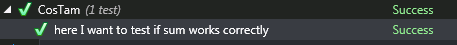
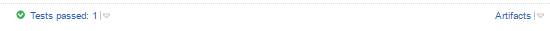
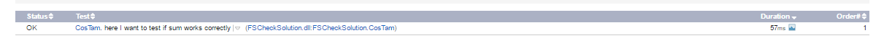

Multiple items
type CosTam =
new : unit -> CosTam
member ( here I want to test if sum works correctly ) : unit -> 'a
Full name: index.CosTam
--------------------
new : unit -> CosTam
type CosTam =
new : unit -> CosTam
member ( here I want to test if sum works correctly ) : unit -> 'a
Full name: index.CosTam
--------------------
new : unit -> CosTam
val this : CosTam
member CosTam.( here I want to test if sum works correctly ) : unit -> 'a
Full name: index.CosTam.( here I want to test if sum works correctly )
Full name: index.CosTam.( here I want to test if sum works correctly )
val test : (int [] -> 'b)
val input : int []
Multiple items
val int : value:'T -> int (requires member op_Explicit)
Full name: Microsoft.FSharp.Core.Operators.int
--------------------
type int = int32
Full name: Microsoft.FSharp.Core.int
--------------------
type int<'Measure> = int
Full name: Microsoft.FSharp.Core.int<_>
val int : value:'T -> int (requires member op_Explicit)
Full name: Microsoft.FSharp.Core.Operators.int
--------------------
type int = int32
Full name: Microsoft.FSharp.Core.int
--------------------
type int<'Measure> = int
Full name: Microsoft.FSharp.Core.int<_>
val result : int
module Seq
from Microsoft.FSharp.Collections
from Microsoft.FSharp.Collections
val sum : source:seq<'T> -> 'T (requires member ( + ) and member get_Zero)
Full name: Microsoft.FSharp.Collections.Seq.sum
Full name: Microsoft.FSharp.Collections.Seq.sum
val reverseSum : int
val rev : source:seq<'T> -> seq<'T>
Full name: Microsoft.FSharp.Collections.Seq.rev
Full name: Microsoft.FSharp.Collections.Seq.rev
val label : (string -> string -> string)
val sprintf : format:Printf.StringFormat<'T> -> 'T
Full name: Microsoft.FSharp.Core.ExtraTopLevelOperators.sprintf
Full name: Microsoft.FSharp.Core.ExtraTopLevelOperators.sprintf
type Generators =
static member muiKastomowyGeneratorek : obj
Full name: index.Generators
static member muiKastomowyGeneratorek : obj
Full name: index.Generators
static member Generators.muiKastomowyGeneratorek : obj
Full name: index.Generators.muiKastomowyGeneratorek
Full name: index.Generators.muiKastomowyGeneratorek
Multiple items
val float : value:'T -> float (requires member op_Explicit)
Full name: Microsoft.FSharp.Core.Operators.float
--------------------
type float = System.Double
Full name: Microsoft.FSharp.Core.float
--------------------
type float<'Measure> = float
Full name: Microsoft.FSharp.Core.float<_>
val float : value:'T -> float (requires member op_Explicit)
Full name: Microsoft.FSharp.Core.Operators.float
--------------------
type float = System.Double
Full name: Microsoft.FSharp.Core.float
--------------------
type float<'Measure> = float
Full name: Microsoft.FSharp.Core.float<_>
val ignore : value:'T -> unit
Full name: Microsoft.FSharp.Core.Operators.ignore
Full name: Microsoft.FSharp.Core.Operators.ignore
property Generators.muiKastomowyGeneratorek: obj
val config : obj
Full name: index.config
Full name: index.config
What is FsCheck?
- Library written in F# for property-based and random testing.
- Integrated with Xunit and Nunit.
- Port of Haskell's QuickCheck library.
- Has it's own tag on stackoverflow

What's the problem?
- How to test functions which arguments admit a wide range of values
- How to test functions which arguments needs to fulfill some restriction
How we solve the problem right now?
- TestSuite in nUnit for various function inputs
1: 2: 3: 4: 5: 6: 7: 8: 9: 10: 11: 12: 13: 14: 15: 16: 17: 18: |
|
How we solve the problem right now?
- Multiple specs
1: 2: 3: 4: 5: 6: 7: 8: 9: 10: 11: 12: 13: 14: 15: 16: 17: 18: 19: 20: |
|
How we solve the problem right now?
- Multiple specs (behaviours)
1: 2: 3: 4: 5: 6: 7: 8: 9: 10: 11: 12: 13: 14: 15: 16: 17: 18: 19: 20: 21: 22: 23: 24: 25: |
|
FsCheck for a rescue!
How to start with FsCheck?
What we should install to start writting tests with FsCheck?
- FSharpTools in VisualStudio
- FSharpPowerTools
- Get the latest version of a project :)
How syntax looks like?
1: 2: 3: 4: 5: 6: 7: 8: 9: 10: 11: 12: 13: 14: 15: |
|
How the pipeline of writing FsCheck test looks like?
- tag class with TestFixture attribute
- tag tests method with Test attribute
- test method must be public, if it's not, then nunit will throw an exception method is not public
- inside test define function with input parameters which should changed in every test execution
- run test as Check.Quick(config) nameOfLocalFunction or Check.QuickThrowOnFailure nameOfLocalFunction
- by default per every test, it is run with different input values 100 times
Shrinker
- What he does
Generators
- generators for simple datatypes are available by default
- it is possible to create own generators for more complicated types
- own generators could be register globally or per test
Custom generator
1: 2: 3: 4: 5: |
|
Global generator registration
1:
|
|
Generator per test
1:
|
|
Custom configuration
- by default test runs 100 times
- granularity of generated data could be also changed
1: 2: 3: 4: 5: 6: 7: 8: |
|
Let's write a simple test
1: 2: 3: 4: 5: 6: 7: 8: 9: 10: 11: 12: 13: 14: 15: |
|
Run
Results
  